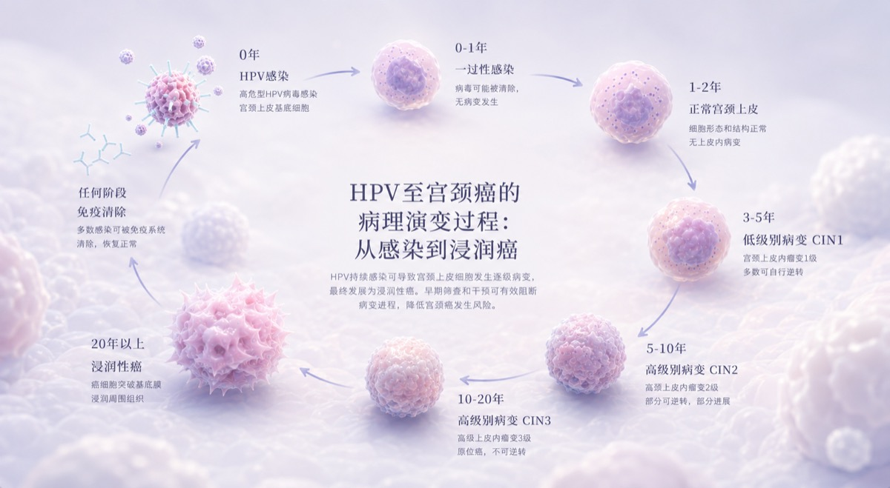
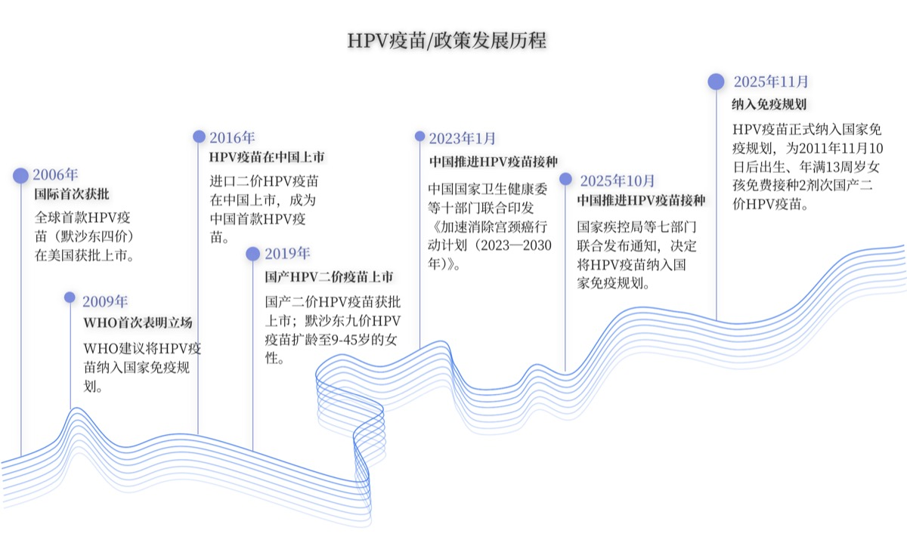
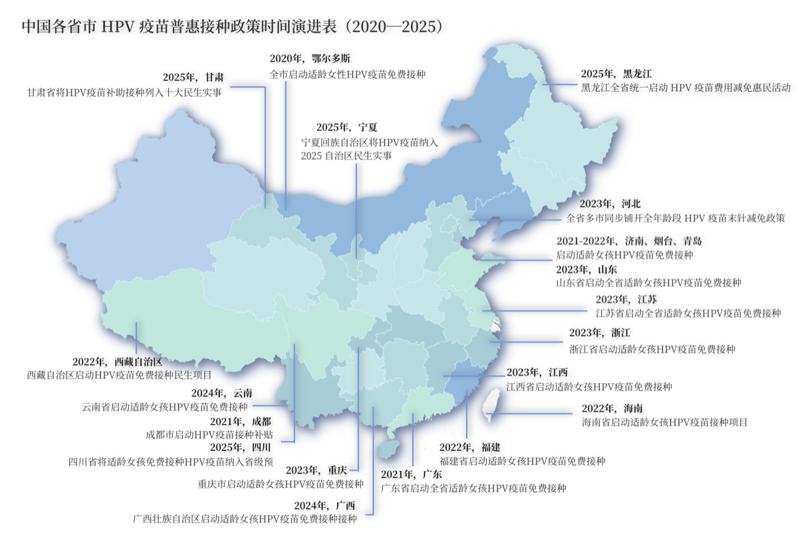

从世界目标、中国政策、治疗成本到校园传播，宫颈癌防治真正缺失的，不再只是一针疫苗。
宫颈癌明明有疫苗可防，为何每年仍有数十万女性抱憾离世？
在所有恶性肿瘤里，宫颈癌几乎是唯一的例外。
宫颈癌病因清晰，疫苗可防，筛查可控，却仍是全球女性第四大常见癌症。
根据2026年7月公布的最新数据，2024年约60.4万例新发病例中，超过87.3%发生在中低收入国家，近90%的死亡也由这些地区承担；中国与印度合计贡献了全球近38%的疾病负担。
全球宫颈癌新发病例分布
（完整图表在完整版中查看）
持续性高危感染通向癌变，漫长潜伏期既是窗口也是盲区
这种严重的疾病负担，指向同一个明确的病因——HPV病毒。它并非单一类型的病毒，而是庞大的型别家族。
宫颈癌99.7%由皮肤高危型HPV（尤以16、18型为主）导致，HPV疫苗防护的核心目标就是覆盖高危型病毒。
HPV病毒型别分布
同时，它们也是肛门癌、外阴癌、口腔癌等多种癌症的重要病因。
HPV相关癌症风险
多数HPV感染会在一两年内被免疫系统自然清除，唯有持续性感染才会沿着病变一路发展为宫颈癌。这一过程往往长达十年以上。

漫长的潜伏期，正是疫苗与筛查发挥作用的窗口。但这漫长的"无声"正是最致命的伪装。
中国新发病例中，18-24岁女性HPV检出率竟达18.8%
60.4万新发病例中，中国以14.49万例的庞大数字占全球病例约23.98%的占比，标准化年发病率在20年间从9.21/10万持续攀升至13.0/10万，年均增速超1.74%。
中国宫颈癌发病率趋势
更值得警惕的是，宫颈癌正加速逼近39岁以下的年轻女性。其中最陡峭的一座直指18至24岁——病毒最先盯上的，正是刚刚迈入大学校园的年轻女孩。
不同年龄段HPV感染率
2017—2022年，全国自费阶段首剂接种率最高约25%，西部多地仅2%—4%
2017至2022年，免疫的屏障主要依赖个人自费。全国绝大多数省份的接种率仍在个位数徘徊；在广大的西部地区，打完三针的女孩甚至不足1%。
中国各省份HPV疫苗接种率分布
二价疫苗由329元降至27.5元，38亿元可覆盖2025—2030年规划
曾经，进口九价全程接种成本将近4000元，但这个障碍正随着国产疫苗的诞生悄然消融。
单支国产二价疫苗从上市初期的329元降至27.5元的历史底价，首款国产九价也以499元终结了千元的垄断。
按照这一价格，首批4.25亿元的财政预算，足以为近772万适龄女孩接种疫苗。
HPV疫苗价格变化趋势
WHO提出90-70-90目标，中国18个省级行政区试点后，全国13岁女孩免费接种
面对日益严峻的疾病负担，WHO在2020年提出消除宫颈癌"90-70-90"目标：90%的女孩15岁前完成接种，70%的女性接受高效筛查，90%的患者获得治疗。


中国从地方试点起步，在五年间实现18个省级行政区接力推进；海南2024年目标人群覆盖率超90%，济南达91.5%。
2025年11月，七部门发文，全国年满13周岁女孩免费接种HPV疫苗计划正式启动。
女大学生仍多靠自费接种，而宫颈癌治疗费用可达数万至十余万元
免费政策主要覆盖13岁女孩，但正处于感染高峰的18—24岁女大学生们仍要独自面对自费接种、预约排队与信息不透明。
一旦在预防的最前端失守，随之而来的将是沉重的代价：早期宫颈癌的手术自付金额约在2万—3.8万元；若不幸步入复发转移阶段，仅免疫药物每年的自费开销便高达8万—15万元。
宫颈癌治疗费用对比
政策全面铺开前，主动接种意愿55.5%—83.7%，真实接种率仅19%
数据显示，公众的主动接种意愿最高可达83.7%，但真实的接种率却仅有19.0%。在地图上检索大学城周边的接种网点，你会看到一个个代表着"可及性"的坐标。
接种点分布地图
但这些看似近在咫尺的坐标，未能转化为真实的保护伞。这本质上是因为，HPV疫苗的可及性障碍并不只表现为价格和供应不足，也包括信息的不透明与难获取。
接种意愿与实际接种率对比
风险、副作用与经验碎片挤满她的搜索结果，预约信息仅占8.5%
当一个女孩在社交平台搜索HPV疫苗时，等待她的是风险提醒、副作用讨论、价格比较、政策转述与个人经历交织在一起的喧嚣。
1500条微博中，疾病科普与感染风险占34.47%，价格与惠民政策占19.14%，真正指向预约接种的内容仅8.5%。
社交平台HPV疫苗信息分布
官方渠道最受信任，学校却成为实际触达与受众期待落差最大的一环
官方与权威渠道依然是最坚实的信任基石，足以平息恐慌、稳定情绪；而数字平台上那些零碎交织的声音，却往往在无形中放大了焦虑与迟疑。
不同信息渠道信任度调查
令人叹息的是，学校组织的实际帮助却远远低于女大学生们的期待，留下了最严重的断层。这是当前高校健康教育缺失的部分。
85.3%的受访者偏好真实经历，数据说明的排斥比例最高
在所有的科普形式中，带有温度的"真实经历"排在首位。85.3%的人给出了积极评价，近一半直接打了满分，"医学科普"也获得了75.5%的认可。
"数据说明"不仅垫底，还遭到了15%受访者的明确排斥。这是因为个人故事天然带着共鸣与信任。
不同科普形式接受度
故事先行 才能让数据被听见
政策是否知晓影响接种意愿，主流媒体与官方卫生机构必须主动出击
认知直接决定了行动。清楚免费与补贴政策的女孩普遍有着极高的接种意愿，而对政策不知情的人，绝大多数陷入了长久的观望与停滞。
政策知晓度与接种意愿关系
在喧杂的网络环境中，权威的官方声音不能缺位。将权威资讯转化为易读的图表与案例，让高公信力的声音融进日常屏幕，公共卫生科普才不会被营销流量带偏。
权威发声 才能把政策从文件推向信息流
高校官方渠道应持续发布HPV政策、预约路径与风险答疑
校园作为与学生最息息相关的生活场所，应该构建起"接种HPV疫苗是符合健康主流、被同龄群体推崇"的包容性同辈文化。
用身边的故事替代枯燥的数据说教，用同辈的共识去瓦解个体的迟疑。
中国正在用惊人的行政效率填补公共卫生的洼地。在政策、资本与数据透明公开的今天，如何填平基层认知的鸿沟、打破地域信息的阻隔，并推动疫苗与早期筛查双轨体系在更广阔的中国腹地落地生根，将是我们这一代人最终彻底消除宫颈癌必须要跨越的最后一座山峰。
【1】GLOBOCAN 2024
【2】WHO Human papillomavirus and related diseases report
【3】GBD 2019
【4】《2023年度健康体检大数据蓝皮书》
【5】China CDC Weekly 2024
【6】国家免疫规划疫苗集中采购项目
【7】世界卫生组织消除宫颈癌全球战略(2020)
新闻制作：黑龙江大学新闻传播学院 林楠、金思怡、潘欣、曾璇
指导老师：黑龙江大学新闻传播学院 李钟隽、李庚